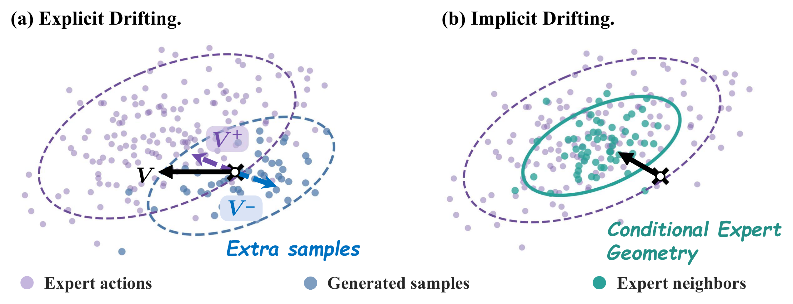
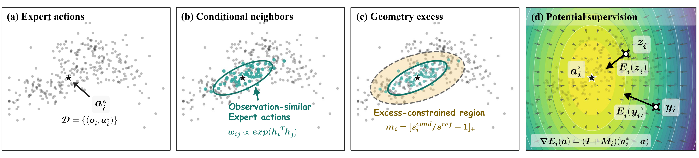
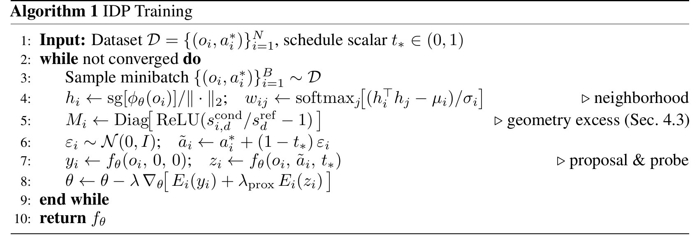
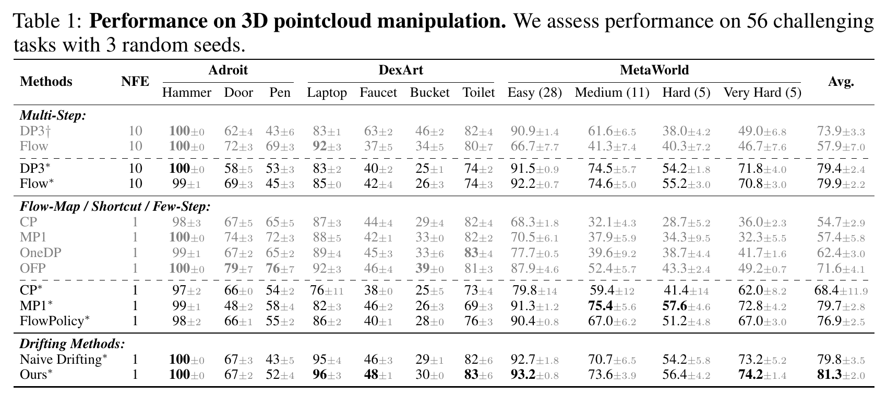
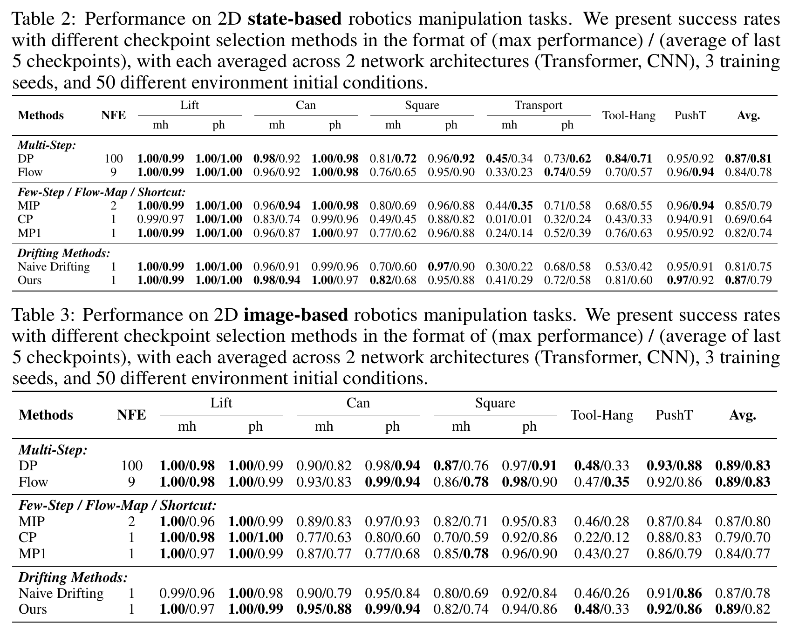
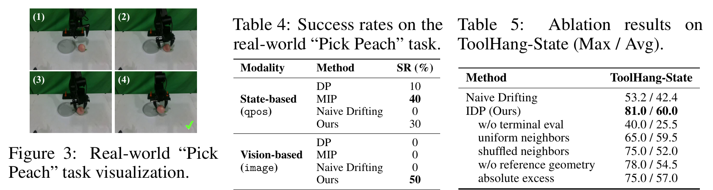
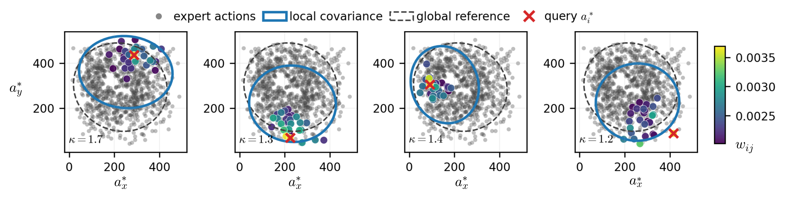

Generative action policies based on diffusion or flow matching excel in behavior cloning, yet their iterative sampling is prohibitive for high-frequency robot control. While recent one-step formulations alleviate this latency, they inevitably discard the intermediate trajectory evolution that provides crucial action correction. Directly recovering this mechanism by explicitly estimating a training-time drifting field is mathematically ill-posed due to extreme conditional demonstration sparsity. We introduce Implicit Drifting Policy (IDP), a one-step imitation learning framework that brings the training-time correction of Drifting into policy learning without explicit vector field estimation. IDP extracts a conditional expert geometry from the local variation of observation-similar expert actions, and compares it against a global reference geometry to isolate condition-specific constraints. This local geometric structure adaptively weights a scalar potential objective. Combined with an expert-proximal terminal evaluation, IDP directly enforces manifold constraints on the one-step generator during training. Extensive evaluations across 2D, 3D, and real-world manipulation tasks show IDP effectively maintains adherence to valid action manifolds, improving upon explicit drifting methods and achieving competitive performance with strong one-step baselines.
Explicit drifting tries to construct corrected targets by estimating a drifting field around the current policy prediction. In behavior cloning, each condition usually supplies only one expert action, so this field degenerates into an unstable, mini-batch-sensitive signal. IDP instead reads the corrective structure directly from demonstrations: observation-similar expert actions define a conditional local geometry, which becomes the source of a one-step training correction.

Per-observation demonstrations are too sparse to support a reliable conditional vector field.
The correction is induced by a scalar potential, not an explicit drifting vector field.
Observation-similar demonstrations identify the action directions that should be tightly controlled.
IDP anchors each training sample at its expert action, retrieves observation-similar expert neighbors, compares their conditional geometry with a global reference geometry, and uses the resulting local geometry excess to define an adaptive potential. The shared policy is evaluated both at the one-step deployment point and near expert actions during training, so the deployed predictor internalizes local manifold constraints without adding inference-time steps.


IDP is evaluated across 2D state- and image-based manipulation, 3D pointcloud manipulation, and real-world robot control. The main simulation results compare multi-step generative policies, few-step shortcuts, strong one-step baselines, and explicit drifting variants.


The real-world Pick Peach task tests whether a one-step policy can stay on a valid action manifold under visually grounded control. Ablations further isolate the contribution of expert-proximal evaluation, condition-specific neighbors, and reference-geometry comparison.

